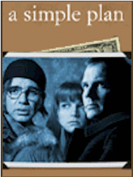
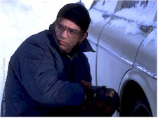
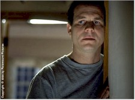
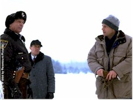

Contents | Features | Reviews | Books | Archives | Store |
 |
|
| Movie Credits | Buy It! |
A Simple Plan
Review by Eddie Cockrell
Posted 11 December 1998
|  | Directed by Sam Raimi Starring
Bill Paxton, Billy Bob Thornton, Written by Scott B. Smith, from his novel |
"Do you ever feel evil?," one brother asks another at a key moment in this snowbound and defiantly leisurely new rural thriller, and the question will resonate with anyone whose ever been tempted by the lure of easy money and the false promise of security it can represent. The plan hatched by these simple people turns out to be anything but, setting in motion a complex series of actions and reactions that lead, inevitably, to tragedy. Anchored by the perfectly meshed and calibrated performances of Bill Paxton as a priggish accountant and Billy Bob Thornton as his deceptively feeble younger brother, A Simple Plan rises above its troubled production history to emerge as an atmospheric triumph for director Sam Raimi and a serious contender for both end-of-the-year top ten lists and Oscar consideration.
On a cold and snowy New Year’s Eve in rural Minnesota, returning from a holiday visit to the graves of their deceased parents, Hank Mitchell (Paxton), his brother Jacob (Billy Bob Thornton) and the latter’s boorish drinking buddy Lou (Brent Briscoe) discover a downed plane with a dead pilot and a duffle bag with $4.4 million in neatly banded, used hundred dollar bills inside. Goaded by Hank’s pregnant wife Sarah (Bridget Fonda) and shadowed by town constable Carl Jenkins (Chelcie Ross), each man’s will dissolves into suspicion as their simple plan to keep the money hidden until the plane is discovered, then split it up three ways and leave town, slowly and inevitably breaks down. With the arrival of FBI agent Baxter (Gary Cole), events take a decisive and disastrous turn.
The finished film shows no signs of its apparently chaotic pre-production (including a stint by John Boorman, whose own Deliverance is a direct ancestor of this film’s murky moral abyss), employing a deceptively simple visual approach that is in stark contrast to Raimi’s razzle-dazzle reputation as the darkly comic horrormeister of the Evil Dead trilogy, Darkman and The Quick and the Dead. With only three weeks of preparation, cinematographer Alar Kivilo, making a triumphant feature debut after a distinguished career in television (he won a Cable ACE award for "Gotti"), was inspired by the location photographs of Delano, Minnesota to follow a visual scheme for the film based on Japanese wood-cut prints (it helps that this is some of the best fake snow you’ll see in a movie). The crow motif, carried over and amplified from the book, is used to chilling effect not only on the stark locations but in Oscar-winning production designer Patrizia von Brandenstein’s cluttered interiors as well; look for the image of the bird over Fonda’s shoulder during a key scene with Paxton.
Smith’s screenplay, from his popular novel, is another high-profile example of less is more school of adaptation, a disciplined and compassionate reworking of his book that displays an innate understanding of what works on film and what doesn’t. For instance, pay close attention to how the pre-credit fox in the henhouse sequence does double duty as a menacing metaphor and the plot’s initial spark. In perhaps the film’s best and certainly its most tense scene, a pivotal confrontation that also appears in the book, the action has been precisely calibrated and subtly shifted to avoid unintentional laughs. In addition, the risky decision to adjust the body count pays big dividends by clearing away narrative clutter and the dubious gamble of having surprise characters pop up late in the game. Other scenes have been pruned and/or combined, shifting the overall focus of the book to accommodate the strengths of the cast without sacrificing its integrity. That the location has been shifted from Ohio to Minnesota matters not a whit, nor do the misguided and unfair comparisons to Fargo -- even though that movie was made by long-time Raimi confederates Joel and Ethan Coen (for whom he’s been, among other credits behind and in front of the camera, the second unit director of The Hudsucker Proxy and the "snickering gunman" in Miller’s Crossing). Despite the snow and the state, this is a very different story, and no matter what you read, most decidedly not a comedy.
Paxton and Thornton first worked together on Carl Franklin’s One False Move (which Thornton wrote), and their bond is evident in the subtle power struggle between siblings who, despite their blood, couldn’t be more different. Again, little things have a cumulative impact, as Paxton softens the book’s Hank into a more conflicted man (he’s an un-showy and thus underrated actor who here clears up any doubts that he can carry a complex leading role), while the Jacob created by Thornton is a walking contradiction, at once compassionate enough to make sure there are always flowers on his parents’ grave but gleefully joining Lou in an impromptu pissing contest in the snow only moments later. This brick-by-brick approach to character is illustrated in an early, throwaway bit of business in the book that finds Hank scooping up a handful of snow to dab at a scratch on his head: in the movie, Jacob offers it to him. Only through collaboration and concentration are such little moments possible.
Fonda is fine in a morally slippery but necessarily underwritten role -- much as she was exactly a year ago in Quentin Tarantino’s Jackie Brown. As the dangerously erratic Lou, little-known actor Briscoe, a confederate of Thornton’s from both Sling Blade and its short inspiration Some Folks Call it a Sling Blade, is in the right place at the right time to capitalize on his anonymity in a memorable performance of inept menace. As Sheriff Jenkins hard-working character actor Chelcie Ross delivers another skillfully authority figure, and that is apparently the same Jack Walsh (as Hank’s boss Tom Butler) who worked with John Waters during his scandalous Pink Flamingos era. As Lou’s girlfriend, Becky Ann Baker plays her one pivotal scene to the hilt, while Gary Cole, whose career includes both Jeffrey MacDonald in the TV adaptation of "Fatal Vision" and the patriarch of the revived big-screen Brady clan, combines the two to chilling effect in his FBI Agent Baxter.
Tom Hanks remembers Forrest Gump director Robert Zemeckis telling him between set-ups that "movies are binary. They’re either zero or they’re one. Meaning, you don’t rate them between 1 and 10. It either works or it does not work [emphasis his], and there’s nothing you can do about it." Simply put, A Simple Plan works: it’s the exception that proves the rule, an apparently rocky group effort that in its finished form is a seamless and cumulatively devastating meditation on despair and the malaise of modern times. In this pre-holiday period, when scenes of festive shopping malls on the evening news segue to reports of layoffs at Boeing, Kellogg Co., MCI WorldCom and Milton Bradley (c’mon, the Scrabble tile factory?), this timely, terrifying film seems to be a pointed warning of the horrible ease with which decent people who’ve never felt particularly evil can be seduced into desperately simple plans that result not in deliverance, but blood.
Contents | Features | Reviews | Books | Archives | Store
Copyright © 1999 by Nitrate Productions, Inc. All Rights Reserved.